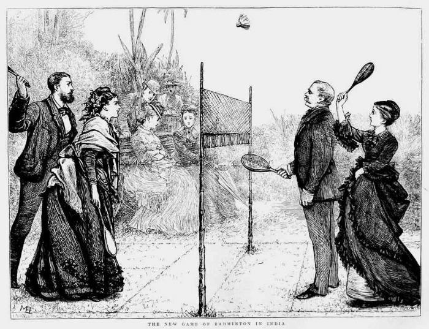
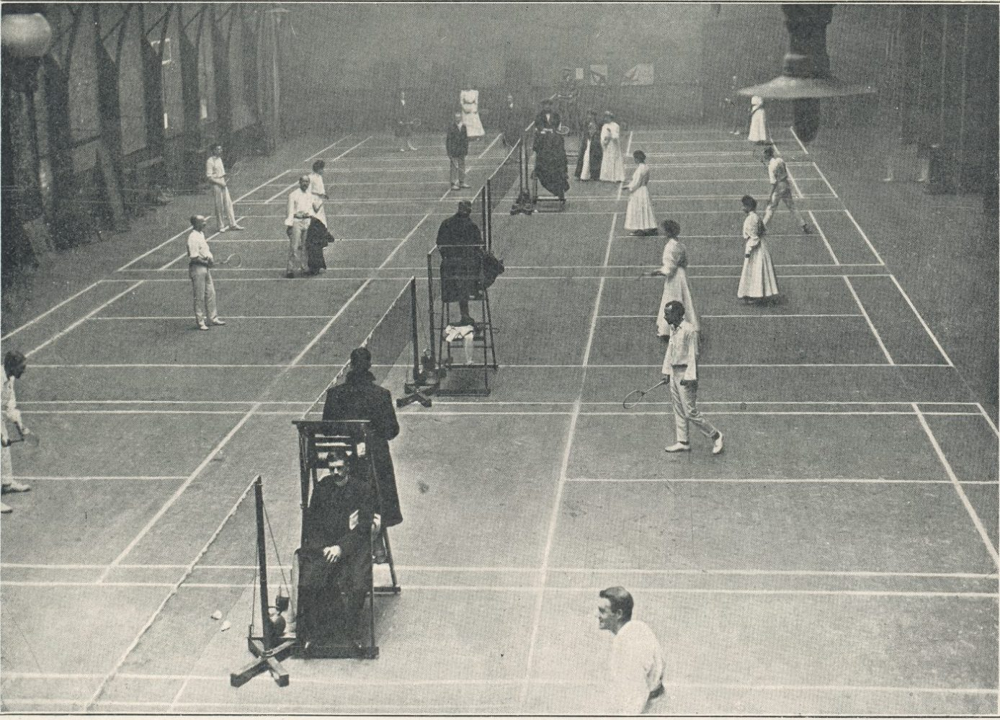

History

Quick History
The game is named for Badminton, the country estate of the dukes of Beaufort in Gloucestershire, England, where it was first played about 1873. The roots of the sport can be traced to ancient Greece, China, and India, and it is closely related to the old children’s game battledore and shuttlecock. Badminton is derived directly from poona, which was played by British army officers stationed in India in the 1860s. The first unofficial all-England badminton championships for men were held in 1899, and the first badminton tournament for women was arranged the next year. The Badminton World Federation (BWF; originally the International Badminton Federation), the world governing body of the sport, was formed in 1934. Badminton is also popular in Malaysia, Indonesia, Japan, and Denmark. The BWF’s first world championships were held in 1977. A number of regional, national, and zonal badminton tournaments are held in several countries. The best-known of these is the All-England Championships.

Badminton in the Olympics
Badminton first appeared in the Olympic Games as a demonstration sport in 1972 and as an exhibition sport in 1988. At the 1992 Games it became a full-medal Olympic sport, with competition for men’s and women’s singles (one against one) and doubles (two against two). Mixed doubles was introduced at the 1996 Games.
First Rules
In the original scoring system that was devised, the match was decided in a best-of-three, 15-point battle for men’s and all doubles fixtures. In the case of women’s singles matches, the first player to get to 11 points won. In this format, only the person serving could win a point. If the receiver won the point, only the serve would change hands but no point would be added to any players tally. If the score reached 13-all in a 15-game match, the player reaching 13 points first had the option of “setting” or directly going for the win by playing for 15. If they pick “set”, the score moved back to 0-0, and whoever secured five points first took the game. If the score reached 14-all, the player reaching 14 first would again have the option to “set” or play straight through to 15 points.
Second Rules (2002)
With the running time of matches becoming a growing concern for the world federation, a plan was put in place for the matches to be decided in a best-of-five-game contest. The first player to get to seven points won. Here, the set rules were decided on the virtue of who got to six points first, when the score was at 6-all. Players could also set up to eight points. But the format would go on to be scrapped after the Commonwealth Games in 2002. The matches continued to stretch on.
New Rules (2006)
In the beginning of 2006, the season started with a new set of rules. This time, the men and the women’s players were playing three games of 21 points each for victory. One of the main talking points here was the rally point scoring, which awarded a point to the player who won it, irrespective of who served. The tie-breaker rules were also fine tuned: out went the Sets. Now, there had to be a two-point difference for a game to be won in case of a tie-breaker. The other major change was in the doubles. In the earlier system, both players in the combination served before it changed hands. But in the 21-point system, serve changes immediately after the pair serving lost a rally. For full rules click here.